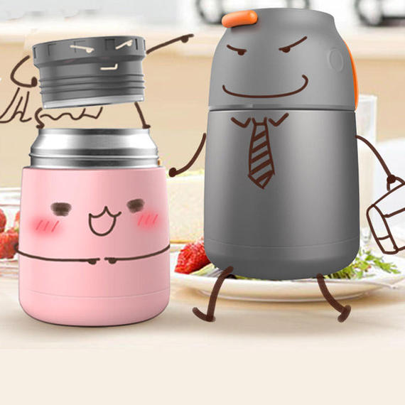

<!DOCTYPE html>
<html lang="en">
<head>
	<meta charset="UTF-8">
	<title>newsDetail</title>
	<meta name="viewport" content="width=device-width,user-scalable=no,initial-scale=1.0,maximum-scale=1.0,minimum-scale=1.0"/>
    <meta content="yes" name="apple-mobile-web-app-capable">
    <meta content="black" name="apple-mobile-web-app-status-bar-style">
    <meta content="telephone=no" name="format-detection">
    <meta content="email=no" name="format-detection">
    <link rel="stylesheet" type="text/css" href="css/reset.css">
	 <link rel="stylesheet" type="text/css" href="css/news.css">
	
</head>
<body>
	<div id="newsDetail" class="news">
		<!-- 顶部固定部分 -->
		<header class="fix clearfix">
			<a class="back fl" href="news.html"></a><!-- 返回按钮 -->
			
		</header>
		<!-- 文章正文部分 -->
		<div class="article">
			<!-- <h1>没有时间怎么</h1>
			<p>早上想吃健康美味早餐，可是没有时间怎么办？用焖烧杯呀，小小的一个大肚杯，光外形看着就很可爱。前一天晚上睡觉的时候就可以把食材放进去，早起两分钟，吃完健康美味的早餐再上班。还可以带到公司，午饭也能帮你焖烧哦</p>
			<div>
				
			</div> -->
		</div>
	</div>
	<script type="text/javascript" src="data/newsList.js"></script>
	<script type="text/javascript" src="js/common.js"></script>
	<script type="text/javascript" src="js/newsDetailScript.js"></script>
	
</body>
</html>